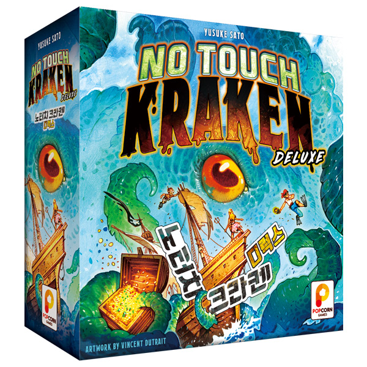
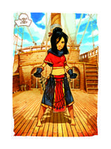
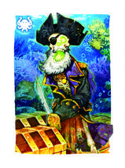
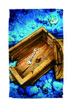
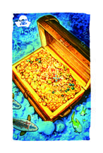
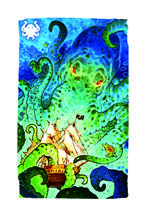
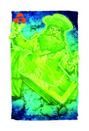
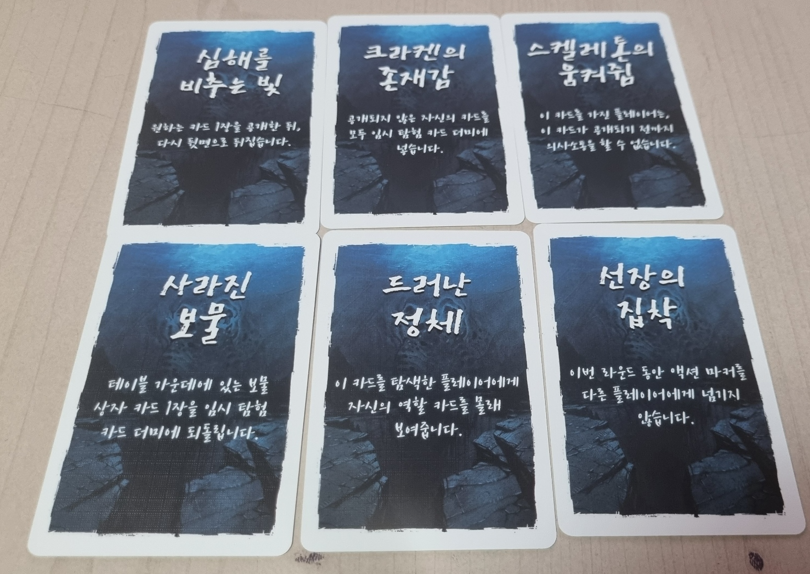

NO TOUCH KRAKEN DELUXE
노터치 크라켄
디럭스
보물은 찾아야 하지만,
크라켄은 절대 깨우면 안 돼요.
서로의 정체를 숨긴 채, 다른 사람 앞에 놓인 카드를 골라 공개하는 블러핑 게임이에요. 누구의 말을 믿고, 누구에게 다음 선택을 맡길지가 중요해요.

내 카드는 고를 수 없어요. 다른 사람의 카드를 공개하고, 그 카드의 주인이 다음 액션을 해요.
01. 내 정체는 나만 알아요.


게임 시작에 역할 카드 한 장을 받고 혼자 확인해요. 같은 팀이 누구인지도 서로 알려 주지 않아요. 스켈레톤도 다른 스켈레톤의 정체를 모르는 상태에서 시작해요.
탐험대 승리
준비한 보물 상자 카드가 모두 공개되면 즉시 끝나요. 기본 게임의 보물 수는 참가 인원과 같아요.
스켈레톤 승리
크라켄 카드가 공개되거나, 보물을 다 찾지 못한 채 4라운드가 끝나면 즉시 끝나요.
거짓말해도 돼요. 스켈레톤이 “나는 탐험대야”라고 말하거나, 탐험대가 가진 보물 수를 다르게 말해도 돼요. 다만 역할 카드를 실제로 보여 주거나, 그 카드에 그려진 그림을 설명해서 증명하는 것은 금지예요.
02. 이 세 종류를 먼저 구분해요.
아래 장수는 상자에 들어 있는 전체 구성 기준이에요. 실제 한 판에는 인원별 표만큼만 사용해요.

공개한 액션 하나를 써요.

준비한 보물을 전부 찾아요.

스켈레톤이 이겨요.
역할 카드와 탐험 카드는 서로 달라요. 탐험대라도 크라켄 카드를 받을 수 있고, 스켈레톤도 보물을 받을 수 있어요. 어떤 탐험 카드를 가졌는지만으로 팀이 정해지지는 않아요.
03. 인원에 맞춰 준비해요.
| 참가 인원 | 4인 | 5인 | 6인 | 7인 | 8인 |
|---|---|---|---|---|---|
| 탐험대 | 3장 | 4장 | 4장 | 5장 | 6장 |
| 스켈레톤 | 2장 | 2장 | 2장 | 3장 | 3장 |
나누고 남은 역할 카드는 공개하지 않고 치워요. 6인 게임은 표의 역할 카드를 모두 사용해요. 그 밖의 인원에서는 실제로 참가한 스켈레톤 수가 준비한 장수보다 적을 수도 있어요.
| 참가 인원 | 4인 | 5인 | 6인 | 7인 | 8인 |
|---|---|---|---|---|---|
| 빈 상자 | 15장 | 19장 | 23장 | 27장 | 31장 |
| 보물 상자 | 4장 | 5장 | 6장 | 7장 | 8장 |
| 크라켄 | 1장 | 1장 | 1장 | 1장 | 1장 |
| 합계 | 20장 | 25장 | 30장 | 35장 | 40장 |
- 각자 역할 카드 한 장을 받아 혼자 확인해요.
- 준비한 탐험 카드를 섞어 각자 5장씩 받아요.
- 자기 탐험 카드의 종류와 수를 혼자 확인해요. 그다음 다시 잘 섞어서 자기 앞에 뒷면으로 펼쳐요.
- 최근에 바다에 다녀온 사람이 액션 마커를 받아 첫 탐색을 시작해요.
“내 앞에 보물 2장과 빈 상자 3장이 있다”는 것은 알지만, 다시 섞었으므로 다섯 장 중 어느 것이 보물인지는 몰라요. 유리한 위치에 카드를 일부러 놓거나, 뒤집어 둔 뒤 몰래 다시 확인하지 않아요.
04. 마커를 가진 사람이 다른 사람의 카드를 골라요.
- 선택하고 토론해요. 내 카드를 제외한 다른 사람의 미공개 탐험 카드 한 장 위에 액션 마커를 놓아요. 아직 공개하기 전에는 의견을 듣고 다른 카드로 선택을 바꿔도 돼요.
- 확정한 한 장을 공개해요. 고른 카드를 앞면으로 돌려 테이블 가운데에 놓아요. 크라켄이거나 마지막 보물이라면 즉시 승패를 확인해요.
- 그 카드의 주인에게 마커를 넘겨요. 방금 카드를 골랐던 사람이 아니라, 자기 앞의 카드가 공개된 사람이 다음 탐색을 해요.
시계 방향으로 한 번씩 돌아가는 게임이 아니에요. 한 사람에게 액션이 여러 번 갈 수 있고, 어떤 사람은 그 라운드에 한 번도 선택하지 못할 수도 있어요.
공개된 탐험 카드는 가운데에 계속 남겨 둬요. 디럭스 특수 카드 효과로 되돌리는 경우를 제외하면 다음 라운드에 섞어 넣지 않아요.
05. 최대 4라운드, 손앞의 카드는 점점 줄어요.
기본 게임은 한 라운드에 참가 인원수만큼 액션을 해요. 5인이라면 다섯 장을 공개하면 그 라운드가 끝나요. 모두 한 차례씩 선택했는지가 기준은 아니에요.
라운드가 끝나면 각자 앞에 남은 미공개 카드만 모두 모아 섞고 똑같이 나눠요. 새로 받은 카드를 혼자 확인한 뒤, 다시 섞어 뒷면으로 놓아요. 역할 카드는 바뀌지 않아요.
액션 마커를 마지막으로 받은 사람이 다음 라운드의 첫 액션을 해요. 4라운드의 마지막 액션까지 보물을 다 찾지 못했다면 스켈레톤 승리예요. 남은 카드를 끝까지 모두 열어 보는 방식이 아니에요.
4인 예시: 2라운드까지 가운데에 8장이 공개됐고, 보물을 3장 찾았어요. 3라운드는 각자 3장으로 시작해 네 번 탐색해요. 네 번째 보물을 찾는 순간 탐험대 승리, 크라켄이 먼저 나오면 스켈레톤 승리예요.
06. 디럭스에는 두 가지 확장이 들어 있어요.
‘탐욕스러운 선장의 저주’ 3장과 특수 카드 6장이 추가돼요. 한 확장만 골라도 되고, 둘을 함께 사용해도 돼요. 처음에는 기본 규칙을 익힌 뒤 원하는 확장을 넣어 봐요.

탐욕스러운 선장의 저주
- 보물 상자 2장 + 저주 1장으로 보물 더미를 먼저 만들어요.
- 남은 보물 상자와 저주 카드를 섞고, 보물 더미의 합계가 참가 인원수가 될 때까지 한 장씩 추가해요. 나머지는 내용을 공개하지 않고 치워요.
- 이 보물 더미를 기본 표의 빈 상자 및 크라켄과 섞어요. 보물 수가 늘어나는 것이 아니라 일반 보물 일부가 저주로 대체돼요.
일반 보물 상자가 한 장 이상 공개된 상태라면 저주를 열어도 괜찮아요. 그때부터 저주도 찾아야 할 보물로 취급하므로, 탐험대는 일반 보물과 저주를 모두 공개해야 이겨요.
5인 게임의 보물 더미는 총 5장이에요. 일반 보물은 최소 2장, 저주는 최소 1장이지만, 정확히 몇 장씩 들어갔는지는 몰라요. 첫 발견이 보물이면 안심, 저주면 바로 패배예요.
07. 특수 카드 6종을 실물로 살펴봐요.

준비와 효과 대상
여섯 장 중 다섯 장을 무작위로 골라 빈 상자 다섯 장 대신 넣어요. 제외한 한 장은 공개하지 않아요. 덱의 총 장수는 같아요. 예를 들어 4인은 빈 상자 10장 + 특수 카드 5장 + 보물 4장 + 크라켄 1장이에요.
보통 특수 카드가 탐색으로 공개되면, 그 카드가 자기 앞에 있던 사람이 효과를 적용해요. 누가 카드를 골라 공개했는지와 구별해요. 아래 ‘스켈레톤의 움켜쥠’만 공개되기 전부터 적용되는 예외예요.
심해를 비추는 빛 · 잠깐 확인
원하는 카드 한 장을 공개해 모두 확인하고 바로 다시 뒤집어요. 그 카드는 가운데에 놓지 않고, 크라켄을 봐도 패배하지 않으며 특수 카드 효과도 발동하지 않아요. 잠깐 본 카드는 라운드의 공개 장수에도 포함하지 않아요.
크라켄의 존재감 · 내 미공개 카드 치우기
이 카드의 주인은 자기 앞에 남은 미공개 탐험 카드 전부를 임시 탐험 카드 더미에 뒷면으로 옮겨요. 그 카드들은 이번 라운드에는 탐색할 수 없고, 라운드가 끝나면 남은 미공개 카드와 함께 다시 섞어요.
스켈레톤의 움켜쥠 · 공개되기 전 침묵
이 카드를 자기 앞에 미공개 상태로 가진 사람은 말, 손짓, 글을 포함한 모든 의사소통을 할 수 없어요. 카드가 공개되는 순간 제한이 풀려요. 침묵 중에도 액션 마커로 탐색할 수 있고, 다른 사람의 탐색 대상이 되거나 팀과 함께 승리할 수 있어요.
사라진 보물 · 발견한 보물 되돌리기
가운데에 공개된 보물 상자 한 장을 임시 탐험 카드 더미로 뒷면으로 되돌려요. 공개된 보물 수가 줄어들므로 탐험대는 나중에 그 보물을 다시 찾아야 해요. 정상적인 라운드보다 액션을 한 번 더 진행해요.
드러난 정체 · 탐색자에게 내 역할 공개
이 카드의 주인은 자신의 카드를 골라 탐색한 사람에게만 자기 역할 카드를 몰래 보여 줘요. 다른 사람에게까지 카드를 보여 주는 효과는 아니에요. 역할 카드를 본 사람도 무엇을 봤는지 말할 때는 거짓말할 수 있어요.
선장의 집착 · 이번 라운드의 선택 독점
이 카드의 주인은 마커를 다른 사람에게 넘기지 않고 남은 액션을 모두 자신이 진행해요. 내 카드 탐색 금지는 그대로예요. 한글판 공식 설명서의 Q&A에 따라 다음 라운드의 선 플레이어도 이 사람이 돼요.
임시 탐험 카드 더미는 어디에 두나요?
현재 라운드에서 잠시 빠진 카드를 모으는 곳이에요. 항상 뒷면으로 두고, 남은 액션 수나 승리 조건을 셀 때는 공개된 카드로 취급하지 않아요. 라운드가 끝나면 각자 앞의 미공개 카드와 모두 합쳐 섞은 뒤 다시 나눠요.
특수 카드 때문에 라운드가 끝나기 전에 더 이상 유효한 탐색을 할 수 없는 드문 상황이 생기면, 한글판 공식 Q&A에 따라 스켈레톤이 즉시 승리해요.
자주 헷갈리는 규칙
내 앞의 카드를 내가 열어도 되나요?
일반 탐색에서는 안 돼요. 다른 플레이어 앞의 미공개 카드만 고를 수 있어요.
카드 종류를 보고 위치를 기억해 둬도 되나요?
확인한 뒤 반드시 다시 섞어요. 내가 받은 카드의 종류와 개수만 알고, 어느 위치에 무엇이 있는지는 모르는 상태로 시작해요. 확인한 뒤 다시 뒤집어 몰래 보거나 일부러 위치를 정하지 않아요.
각자 한 번씩 탐색하면 라운드가 끝나나요?
참가 인원수만큼 액션을 하면 끝나요. 네 명이라면 누가 선택했든 네 번이에요. 특수 카드 ‘사라진 보물’이 적용되면 액션을 한 번 더 해요.
이미 공개한 보물은 다음 라운드에 다시 섞나요?
가운데에 남겨 둬요. 각자 앞의 미공개 카드만 다시 섞어요. 특수 카드 효과로 임시 더미에 돌려놓은 카드만 예외예요.
탐험대가 크라켄을 받았다면 사실대로 말해야 하나요?
아니요. 탐험대와 스켈레톤 모두 거짓말할 수 있어요. 크라켄이 있는 곳을 정확히 말하면 스켈레톤이 그 카드를 열려고 할 수 있으니 어떤 정보를 말할지 판단해요.
디럭스 확장은 반드시 두 가지 다 넣어야 하나요?
선장의 저주만, 특수 카드만, 둘 모두 사용, 어느 쪽도 사용하지 않기 모두 가능해요. 시작 전에 같이 정해요.
여러 판 즐기는 방법
토큰 28개는 어디에 쓰나요?
여러 게임을 이어 하는 선택 규칙이에요. 한 게임이 끝날 때 패배한 팀의 각 플레이어가 토큰 한 개씩 받아요. 누군가 토큰 세 개를 모으면 전체 게임을 끝내고, 토큰이 가장 적은 사람이 최종 승자예요. 동점이면 공동 승리해요.
설명서의 3인 선택 규칙도 있나요?
있어요. 역할은 탐험대 3장·스켈레톤 2장을 섞어 세 사람에게 한 장씩 나눠요. 탐험 덱은 빈 상자 11장·보물 상자 3장·크라켄 1장, 총 15장이에요. 나머지 기본 규칙은 같아요. 셋 모두 탐험대가 될 수도 있는데, 이때 크라켄이 공개되면 모두 패배해요. 이 페이지의 인원 표는 제품의 기본 지원 인원인 4~8인 기준이에요.